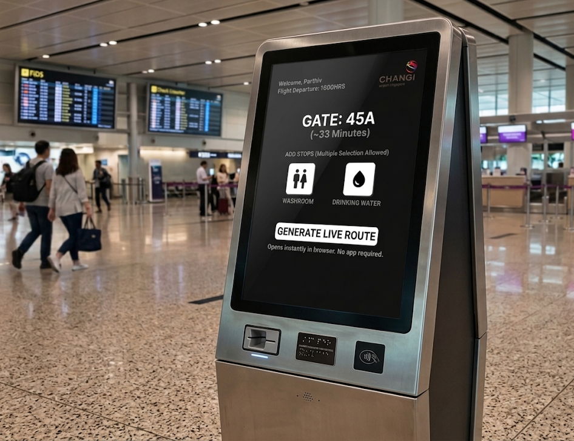
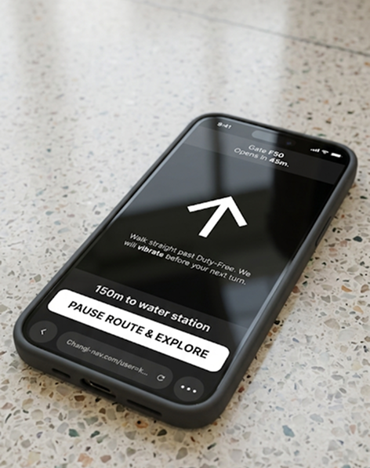
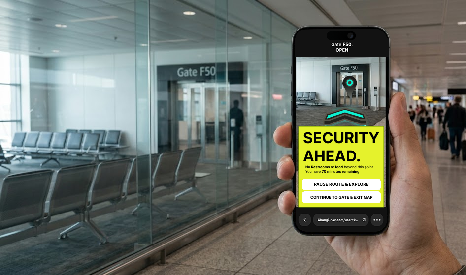
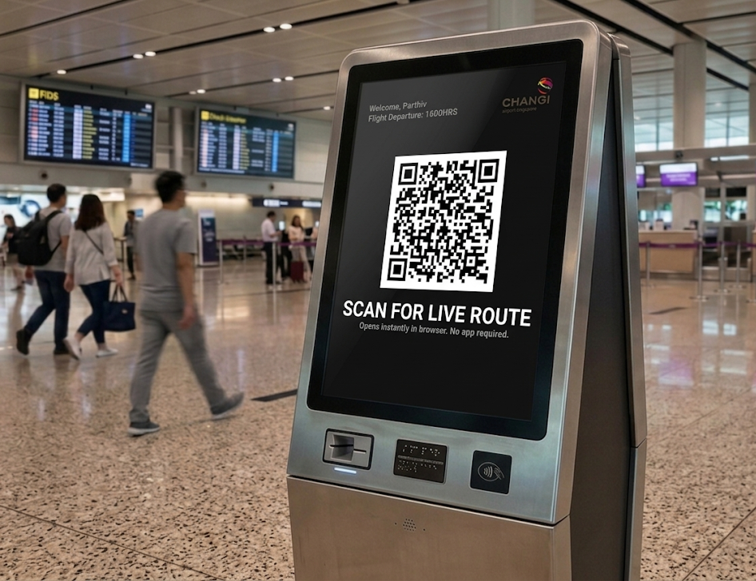

What if travellers waited at the gate only because they chose to?
A one-week exploration of how unfamiliar travellers at Changi could get enough confidence about time and distance to stop committing to the gate early, built on screens and signals the airport already has.

- My role
- Solo · desk research, concept, system rules, UI, presentation
- Timeline
- About one week · March 2026
- Evidence
- Secondary research only · no interviews, no field visit
A teacher told me about feeling completely lost in an airport abroad and losing track of time. I'd never had that experience, which is exactly why it interested me. Looking into it, I kept landing on Changi, where most security screening happens at the gate rather than at the terminal entrance.
If a traveller isn't sure how far the gate is or how long they have, the safe move is to go there early. At Changi, that means walking past the shops and toilets and into a holdroom. Aura Space explores whether a clearer picture of time and distance could change that decision. It's a speculative concept, not a validated solution.



At Changi, where security happens changes where you can be
Most airports screen everyone once, near the entrance. In Changi's Terminals 1–3, passengers pass immigration into a large transit mall and are only screened at their own gate. Terminal 4 uses the conventional model.
{{ secNote }}
When you don't know how long you have, early feels safe
I called it the gate trap. It's a hypothesis I built from desk research, not something I watched happen: uncertainty pushes people through gate security sooner than they need to go.
Doesn't know Changi screens at the gate. Unsure of the distance, so goes straight there and stays. Skips the mall entirely, including the toilet.
Wants to eat and browse duty-free. Starts out relaxed, but without a sense of how far the gate is, worry builds and the wandering ends early.
How might we give unfamiliar travellers enough certainty about time and distance that the gate becomes a choice, not a refuge?
Before adding something new, I asked what Changi already had
Singapore's immigration already uses QR codes to move people past queues, and travellers seem used to scanning them. That gave me the starting point. Kiosks people already walk past could hand them a route instead of a printed map.

Needs first, then the route, then one honest warning
Aura Space is a browser-based AR compass. It starts at a kiosk, moves to the traveller's phone with one scan, and tells them plainly what they lose by going through security.
AR in a crowded terminal has to stay out of the way
An airport corridor is full of people, luggage and overhead signs. Each rule below is a decision about where the AR layer is allowed to sit, and when to turn it off.
{{ r.d }}
{{ stateNote }}
The business case is three guesses multiplied
When I presented the project, I estimated Changi could recover about $375,000 a day. That number is just passengers × minutes × spend per minute, and I didn't verify any of the three. Here it is as a model you can change.
A week of desk research leaves a lot unproven
I didn't speak to a single traveller. Here is what the concept rests on, and how well each part has held up since.
How often does this happen, and what actually causes it?
If unfamiliar travellers don't go through gate security early, or do it for reasons a map can't fix, the concept has nothing to stand on. That comes before any interface.